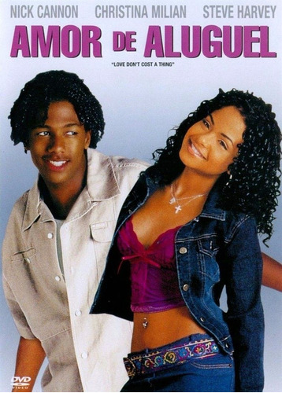

A história se baseia em dois protagonistas, sendo eles pacientes com fibrose cística.
Stella possui supervisão constante, visitas de seus amigos e familiares, e um diário
em vídeo compartilhando suas conquistas e agruras com milhares de internautasEles se conhecem no hospital e acabam se apaixonando, apesar de precisarem seguir
algumas regras impostas pelos médicos, como, por exemplo, manter a distância de 1,5 metros entre si.
Sinópse
Dois amigos inseparáveis, Alex e Rosie, compartilham entre si experiencias memoráveis.
Em dado momento desta trajetória, Alex ganha uma bolsa de estudos e passa a morar em outra
cidade, e Rosie acaba sendo impedida de ir junto por um incidente. A distância entre eles
faz com que nasçam os primeiros segredos, mas, ao mesmo tempo, o destino continua unindo os
dois de maneira a gerar sentimentos afetivos.
Sinópse
Dois adolescentes que estão passando por momentos difíceis, se encontram e passam
a se apoiam para curar os estigmas emocionais e físicos que adquiriram no passado.
É criado um forte laço quando embarcam em uma jornada transformadora para visitar as maravilhas
de determinado estado nos Estados Unidos, porém todo o entusiasmo pode não ser o bastante para que
se trate de uma linda história de amor

Sinópse
O nerds de ciências Alvin Johnson é especialista em engenharia, mas incompetente quando se
trata de namoro. Um dia, uma garota popular, Paris Morgan, aparece na loja de carros onde
ele trabalha depois da escola porque danificou o carro de sua mãe e urgentemente precisa de reparos.
Alvin oferece um suborno: ele vai consertar o carro imediatamente em troca de duas semanas de namoro.
Paris concorda e Alvin é capaz de entrar no reino sagrado das crianças populares.